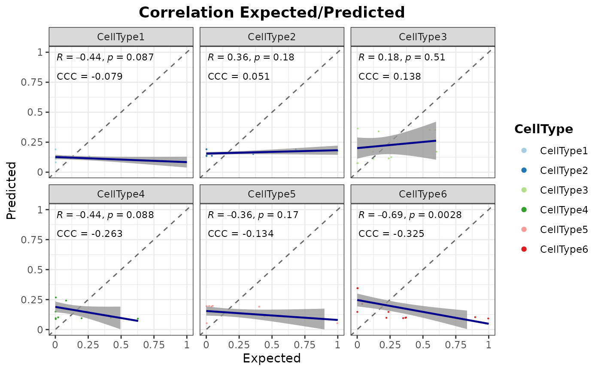
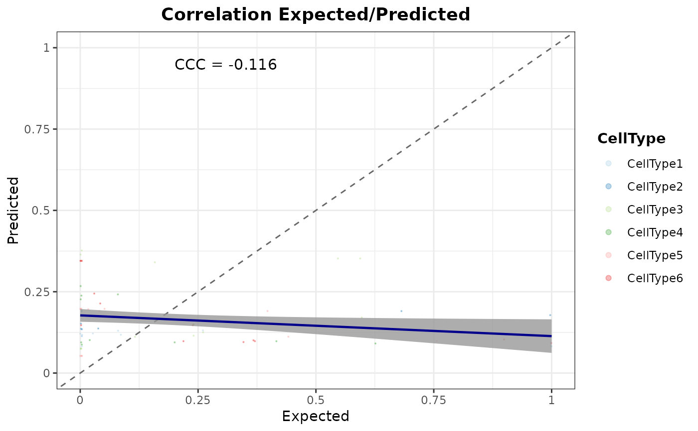

Generate correlation plots between predicted and expected cell type proportions of test data
Source:R/evalMetrics.R
corrExpPredPlot.RdGenerate correlation plots between predicted and expected cell type
proportions of test data. Correlation plots can be shown all mixed or either
split by cell type (CellType) or the number of different cell types
present in the spots (nCellTypes).
Usage
corrExpPredPlot(
object,
colors,
facet.by = NULL,
color.by = "CellType",
corr = "both",
filter.sc = TRUE,
pos.x.label = 0.01,
pos.y.label = 0.95,
sep.labels = 0.15,
size.point = 0.1,
alpha.point = 1,
ncol = NULL,
nrow = NULL,
title = NULL,
theme = NULL,
...
)Arguments
- object
SpatialDDLSobject withtrained.modelslot containing metrics in thetest.deconv.metricsslot of aDeconvDLModelobject.- colors
Vector of colors to be used.
- facet.by
Show data in different panels. Options are
nCellTypes(number of different cell types) andCellType(cell type) (NULLby default).- color.by
Variable used to color data. Options are
nCellTypesandCellType.- corr
Correlation value shown as an annotation on the plot. Available metrics are Pearson's correlation coefficient (
'pearson') and concordance correlation coefficient ('ccc'). It can be'pearson','ccc'or'both'(by default).- filter.sc
Boolean indicating whether single-cell profiles are filtered out and only mixed transcriptional profile errors are shown (
TRUEby default).- pos.x.label
X-axis position of correlation annotations (0.95 by default).
- pos.y.label
Y-axis position of correlation annotations (0.1 by default).
- sep.labels
Space separating annotations if
corris equal to'both'(0.15 by default).- size.point
Size of points (0.1 by default).
- alpha.point
Alpha of points (0.1 by default).
- ncol
Number of columns if
facet.byis other thanNULL.- nrow
Number of rows if
facet.byis different fromNULL.- title
Title of the plot.
- theme
ggplot2 theme.
- ...
Additional arguments for the facet_wrap function of ggplot2 if
facet.byis notNULL.
Examples
# \donttest{
set.seed(123)
set.seed(123)
sce <- SingleCellExperiment::SingleCellExperiment(
assays = list(
counts = matrix(
rpois(30, lambda = 5), nrow = 15, ncol = 20,
dimnames = list(paste0("Gene", seq(15)), paste0("RHC", seq(20)))
)
),
colData = data.frame(
Cell_ID = paste0("RHC", seq(20)),
Cell_Type = sample(x = paste0("CellType", seq(6)), size = 20,
replace = TRUE)
),
rowData = data.frame(
Gene_ID = paste0("Gene", seq(15))
)
)
SDDLS <- createSpatialDDLSobject(
sc.data = sce,
sc.cell.ID.column = "Cell_ID",
sc.gene.ID.column = "Gene_ID",
sc.filt.genes.cluster = FALSE
)
#> === Spatial transcriptomics data not provided
#> === Processing single-cell data
#> - Filtering features:
#> - Selected features: 15
#> - Discarded features: 0
#>
#> === No mitochondrial genes were found by using ^mt- as regrex
#>
#> === Final number of dimensions for further analyses: 15
SDDLS <- genMixedCellProp(
object = SDDLS,
cell.ID.column = "Cell_ID",
cell.type.column = "Cell_Type",
num.sim.spots = 50,
verbose = TRUE
)
#>
#> === The number of mixed profiles that will be generated is equal to 50
#>
#> === Training set cells by type:
#> - CellType1: 3
#> - CellType2: 1
#> - CellType3: 3
#> - CellType4: 2
#> - CellType5: 3
#> - CellType6: 2
#> === Test set cells by type:
#> - CellType1: 1
#> - CellType2: 1
#> - CellType3: 1
#> - CellType4: 1
#> - CellType5: 1
#> - CellType6: 1
#> === Probability matrix for training data:
#> - Mixed spots: 34
#> - Cell types: 6
#> === Probability matrix for test data:
#> - Mixed spots: 16
#> - Cell types: 6
#> DONE
SDDLS <- simMixedProfiles(SDDLS)
#> === Setting parallel environment to 1 thread(s)
#>
#> === Generating train mixed profiles:
#>
#> === Generating test mixed profiles:
#>
#> DONE
# training of DDLS model
SDDLS <- trainDeconvModel(
object = SDDLS,
batch.size = 15,
num.epochs = 5
)
#> === Training and test from stored data
#> Using only simulated mixed samples
#> Using only simulated mixed samples
#> Model: "SpatialDDLS"
#> _____________________________________________________________________
#> Layer (type) Output Shape Param #
#> =====================================================================
#> Dense1 (Dense) (None, 200) 3200
#> _____________________________________________________________________
#> BatchNormalization1 (BatchNorm (None, 200) 800
#> _____________________________________________________________________
#> Activation1 (Activation) (None, 200) 0
#> _____________________________________________________________________
#> Dropout1 (Dropout) (None, 200) 0
#> _____________________________________________________________________
#> Dense2 (Dense) (None, 200) 40200
#> _____________________________________________________________________
#> BatchNormalization2 (BatchNorm (None, 200) 800
#> _____________________________________________________________________
#> Activation2 (Activation) (None, 200) 0
#> _____________________________________________________________________
#> Dropout2 (Dropout) (None, 200) 0
#> _____________________________________________________________________
#> Dense3 (Dense) (None, 6) 1206
#> _____________________________________________________________________
#> BatchNormalization3 (BatchNorm (None, 6) 24
#> _____________________________________________________________________
#> ActivationSoftmax (Activation) (None, 6) 0
#> =====================================================================
#> Total params: 46,230
#> Trainable params: 45,418
#> Non-trainable params: 812
#> _____________________________________________________________________
#>
#> === Training DNN with 34 samples:
#>
#> === Evaluating DNN in test data (16 samples)
#> - loss: 1.4361
#> - accuracy: 0.125
#> - mean_absolute_error: 0.233
#> - categorical_accuracy: 0.125
#>
#> === Generating prediction results using test data
#> DONE
# evaluation using test data
SDDLS <- calculateEvalMetrics(object = SDDLS)
# correlations by cell type
corrExpPredPlot(
object = SDDLS,
facet.by = "CellType",
color.by = "CellType",
corr = "both"
)
#> `geom_smooth()` using formula = 'y ~ x'

# correlations of all samples mixed
corrExpPredPlot(
object = SDDLS,
facet.by = NULL,
color.by = "CellType",
corr = "ccc",
pos.x.label = 0.2,
alpha.point = 0.3
)
#> `geom_smooth()` using formula = 'y ~ x'

# }